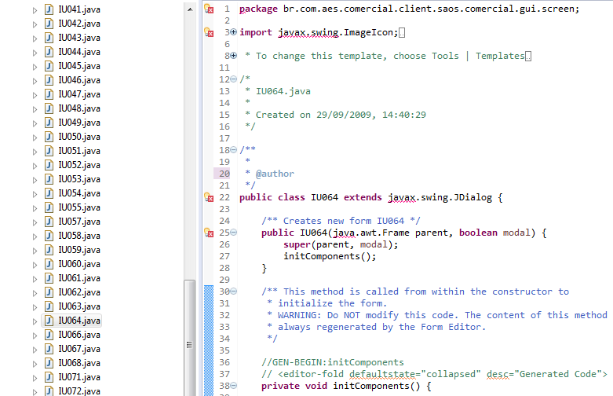
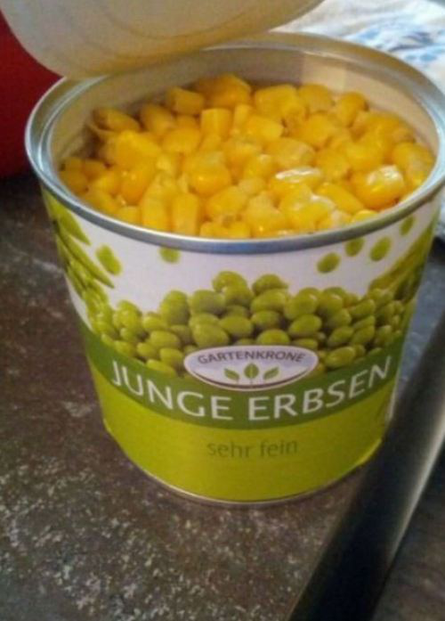
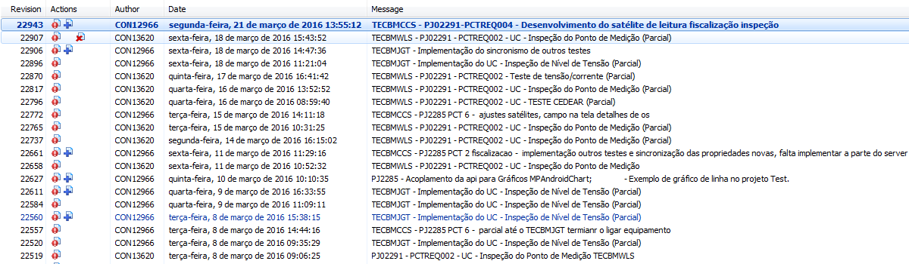
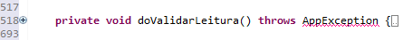
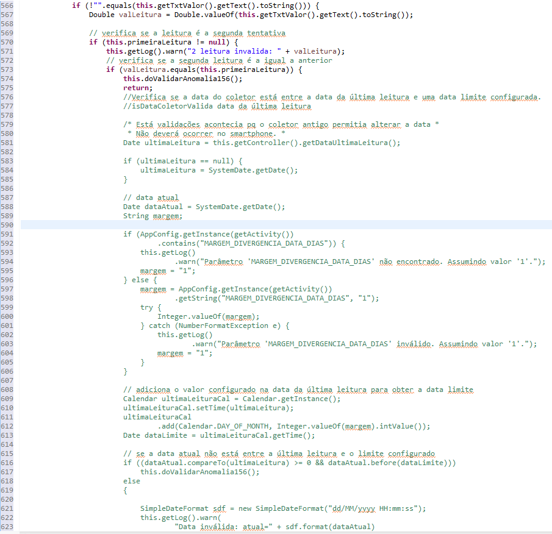
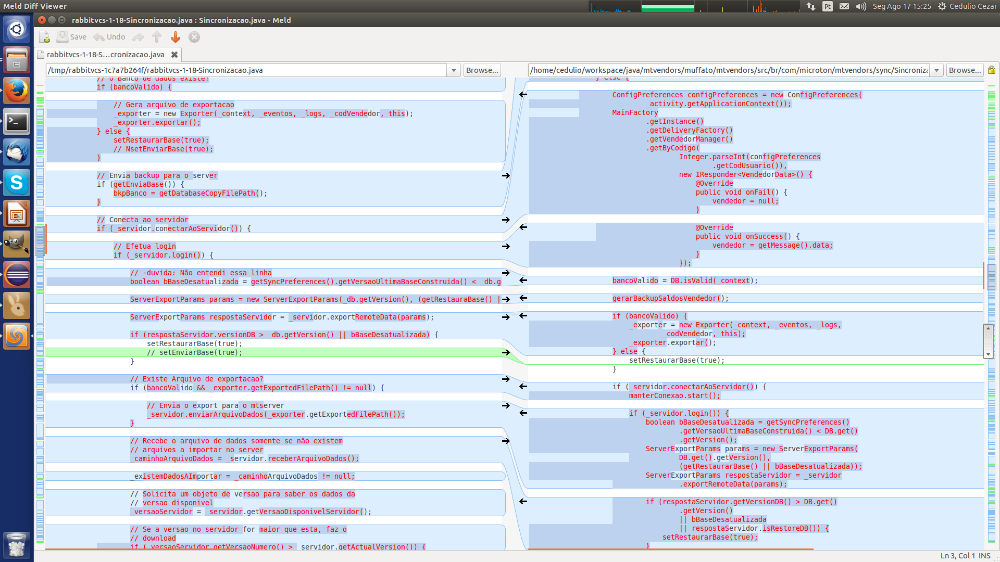
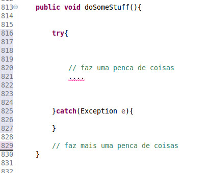
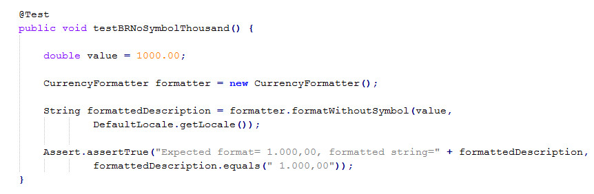

Clean Code Culture
Sobre
- Tecnólogo pela UTFPR
- Paranaense
- Desenvolvedor
- Android
- iOS(Swift)
Exercício comparação


Qual é mais simples de entender?
É disso que se trata o Clean Code!
- Legível
- Sustentável (Manutenível)
- Testável
- Elegante
Qual a situação da base de código que você está trabalhando?
Quantos 'incêndios' você precisou apagar no último ano?
Eu diria que sempre existe aquele projeto...
Antes de prosseguir...
Como eu cheguei ao Clean Code?
Imagine o caos
- Códigos macarrônicos
- Falta de documentação
- Bugs que vão e voltam
- Equipe conformada
- Muitos 'incêndios' para apagar
Ponto de virada
Adoção do Clean Code e patterns de arquitetura adequados
Depois de alguns meses
- Média mensal de chamados reduzido
- Maior participação dos integrantes
- Equipe com mais tempo para pesquisas
- Pouquíssimos indíces de 'incêndios'
- Taxa de retorno da homologação despencou
Minha reação e da equipe
Devemos mesmo nos importar?
Boa parte do tempo passamos lendo código
- Correção de erros
- Alteração da regra de negócio
- Melhorias
- Novas funcionalidades
Quem vai manter o código no futuro?
Como nem tudo são flores
Subjetividade
Não existe receita de bolo
- Legível
- Sustentável
- Testável
- Elegante
Devemos ter cautela.
Se o Clean Code é tão bom...
Porque não o vemos em ação com tanta frequência?
- Ignorância
- Teimosia
- Sindrome do tempo de vida curto
- Arrogância
- Segurar o trabalho
- Depois nós arrumamos
O que realmente compõem o Clean Code?
Conjunto de conceitos simples
Que infelizmente muita gente não coloca em prática
Conceitos
- Atenção a atribuição de nomes
- Princípio da Responsabilidade Única
- Redução do uso de comentários
- Implementação de testes
- Mudança de cultura
- Bom senso
Nomenclatura
- Nomes pronunciáveis
- Nomes não ambíguos
- Nomes intencionais
- Certa dificuldade para atribuir bons nomes
Nomes pronunciáveis
Atribua nomes pronunciáveis em uma conversa
Imagine uma chamada...
- valorATPFM00NZP
- valorATPFM01NTT
Nomes não ambíguos
Considere a seguinte variável: valorFP
Evite confusões
Você consegue ser mais descritivo que 'valorFP'
- valorFinalProduto
- valorFormaPagamento
Nomes intencionais
- Tipagem
- Propósito
O que você pode dizer sobre o seguinte membro de uma classe:
...
private Collection lista;
...
- Não muito bom
- Qual é a tipagem?
- Qual o seu propósito?
Talvez possamos melhorar...
...
private Collection listaProdutos;
...
- Um pouco melhor
- Sabemos a tipagem
- Mas pra que ele serve?
...
private Collection catalogoProdutos;
...
- Sabemos a tipagem
- Temos idéia da intenção
- Dependendo do contexto isso é suficiente
Agora que ja sabemos o nome
Qual padrão de nome vamos utilizar?
...
private Collection catalogoProdutos;
private Collection CatalogoProdutos;
private Collection catalogo_produtos;
private Collection _catalogoProdutos;
...
Não importa...
Desde que toda a equipe utilize o padrão
Priorize o padrão da comunidade
Parece básico demais
E realmente é!
Mas muita gente não faz!
IU064
OK, já falamos de nomes de variáveis, mas e os métodos?
...
action1();
action2();
action3();
action4();
salvar1();
salvar2();
salvar3();
...
Devemos aplicar as mesmas regras!
- Nomes pronunciáveis
- Nomes não ambíguos
- Nomes intencionais
Além dos nomes...
Devemos nos preocupar com o que os nossos métodos fazem e como fazem.
Métodos devem...
- Caber em uma tela
- Promover a coesão
- Evitar o acoplamento
- Ser facilmente testados
Em resumo, métodos pequenos acordo com o propósito da classe que os detém!
Mas porquê diminuir?
Com a diminuição de tamanho a possibilidade de reuso aumenta
Afinal, que outro cenário utilizaria aquele método que no mesmo bloco valida, salva, formata, conecta no banco e abre outra tela?
Como reduzir o tamanho dos métodos?
- Estipule um tamanho máximo
- Aplique os conceitos DRY e SRP
- Separe mentalmente em níveis
Níveis de métodos
- Alto
- Visão geral
- Não entra em detalhes
- Normalmente compoẽm a interface publica da classe
- Médio
- Aborda um pouco mais o problema
- Normalmente métodos com visibilidade protegida
Níveis de métodos
- Baixo
- Normalmente não passam de 5 linhas
- Com frequência alteram o estado do objeto
- Métodos privados
Quanto mais próximo do 'núcleo' maior a chance desse método alterar o estado do objeto

Don't Repeat Yourself(DRY)
- Evite repetição, avance na abstração
- Extraia pequenos trechos
- Fuja do Copy'n Pasta
Código duplicado dificulta a manutenção
Novamente, básico mas muita gente não faz!
Single Responsibility Principle(SRP)
- Faça uma coisa só!
- Fuja dos God Objects
- Aplica-se a métodos, classes, variáveis de controle
Uma boa pista são métodos que formatam e logo apresentam os dados
Falando em responsabilidade!

Achou pouco? Pense em uma API...
Na qual você chama o setText e o componente mostra uma dialog após definir o texto
label.setText("Texto");
Outro exemplo

Talk is cheap. Show me the code!
Mostrar source AIS Android - ComerciaisController
- God Object
- Tamanho da interface publica
- Diferença entre métodos
- carregaValoresOsComercial
- atualizarCadastrosBasicos
Comentários, precisamos mesmo deles?
//When I wrote this, only God and I understood what I was doing
//Now, God only knows
Regra básica dos comentários
Eles podem mentir, pois não compilam nem são executados...
Outras questões sobre comentários
Eles não melhoram código ruim
Ao invés de sair comentando, pense se o código não precisa de uma refatoração
Bom uso de comentários
- Descrever uma intenção ou clarear algo
- // Formato da data yyyy-MM-dd
- Avisos ou consequências
- TODO's, que devem ser temporários
- Javadoc para uma API
Comentários ruins
- Comentários óbvios
- // Default constructor
- // lista de produtos
- Journaling
- // 06/06/1666 - batman - adicionou o calculo
Resistência a mudança
Remoção do Journaling
Conheça suas ferramentas
Evite código comentado
//private MenuProcess criarMenuCadastro() {
// MenuProcess menuCadastro = new MenuProcess();
// menuCadastro.setText(getString(R.string.atividade_menu_aceite));
// menuCadastro.setWidth(80);
// menuCadastro.setState(MenuProcess.StateMenu.PENDENTE);
// menuCadastro.setResImageIcon(R.drawable.ic_tab_aceite);
// menuCadastro.setResImageIconSelected(R.drawable.ic_tab_aceite_selected);
// menuCadastro.setSelected(true);
// return menuCadastro;
//}
- Ficará lá para sempre
- Atrapalha a leitura
- Utilize VCS para isso
Em dúvida sobre se deve ou não deixar código comentado? Método de de quase 200 linhas e boa parte dele são códigos comentados...
 Número de colunas
if(getTextView().getText().toString().equalsIgnoreCase(ordemServicoComercial.getNumOS()))
Não crie linhas intermináveis
Limite de colunas
- Padrão antigo entre 80 ~ 100
- Padrão novo entre 100 ~ 120 colunas
- Facilita o uso de formatação automática
- A equipe deve decidir, não somente uma pessoa
Falando em formatação automática...
Membros da mesma equipe deveria utilizar o mesmo estilo de workspace
Com finalidade de facilitar o merge

Imagine um merge em linhas intermináveis

Exceptions
Como você trata os erros do seu software?
Quantas vezes você ja viu isso?
De a devida atenção as exceptions
Em geral, só faça um catch quando for realizar alguma ação ou melhorar a mensagem.
Caso contrário passe para 'cima'
Sim, todos os catchs fazem a mesma coisa


Testes
Você já escreveu algum teste que possa ser repetido automaticamente?
Testes unitários
Como seria testar um método gigante?
Todos os conceitos apresentados podem e devem ser aplicados aos testes
Exemplo de teste pequeno para um formatador de moeda
Caberia uma apresentação inteira sobre testes unitários e Test Driven Development(TDD)
Você pode até não concordar com TDD
Sem problemas, a idéia principal ter testes unitários que possam ser repetidos sempre. Caso contrário...
Clean Code Culture
Muito mais que um checklist
Clean Coder Rule
Sempre deixe o código mais limpo do que você o encontrou.
Com cuidado obviamente!
Tudo isso depende...
- Equipe comprometida com a qualidade
- Cooperação
- Conversa sobre boas práticas
- Esquecer a filosofia: Beleza e Paciência
Promova o ambiente colaborativo!
Teoria das janelas quebradas
Clean Code para manter as janelas intactas
Clean Code em projetos novos
- Comece pelos nomes
- Teste a separação de métodos
- Leia algumas páginas do Clean Code
- Teste o que aprendeu
- Discuta com outros integrantes da equipe
Clean Code em projetos antigos
Começamos onde estamos, com o que temos e fazendo o que podemos
Referências

JeremyBytes - Clean Code: Homicidal Maniacs Read Code, Too!
Espero ter contribuído!